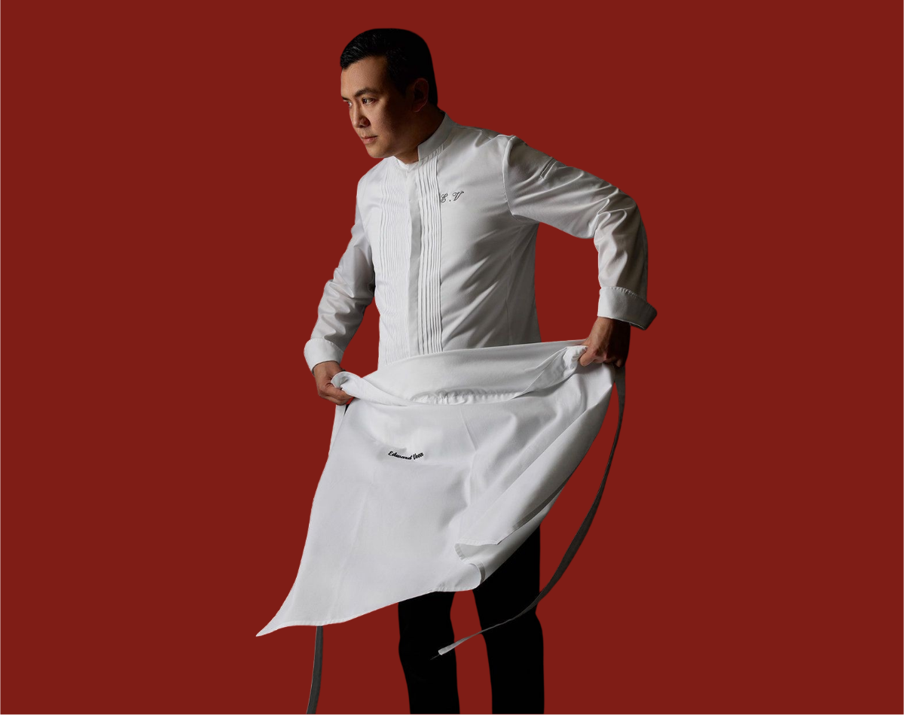
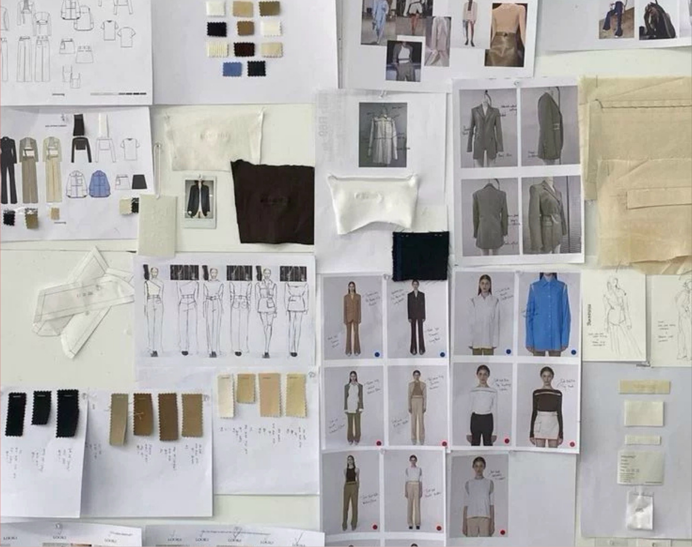
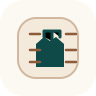
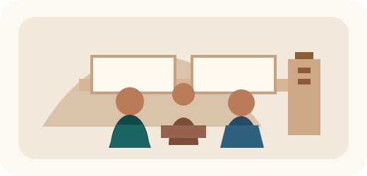
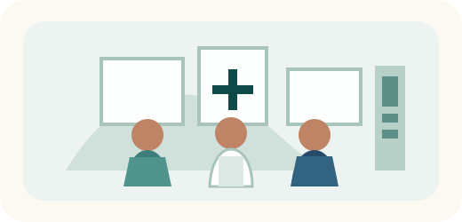
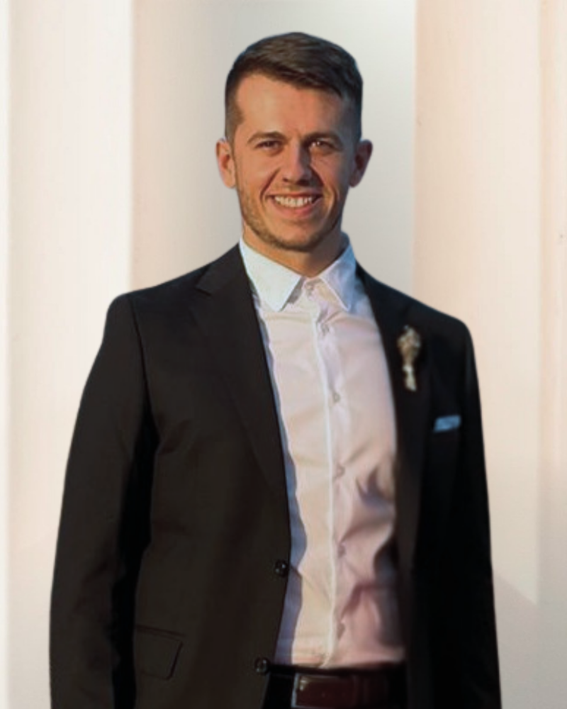
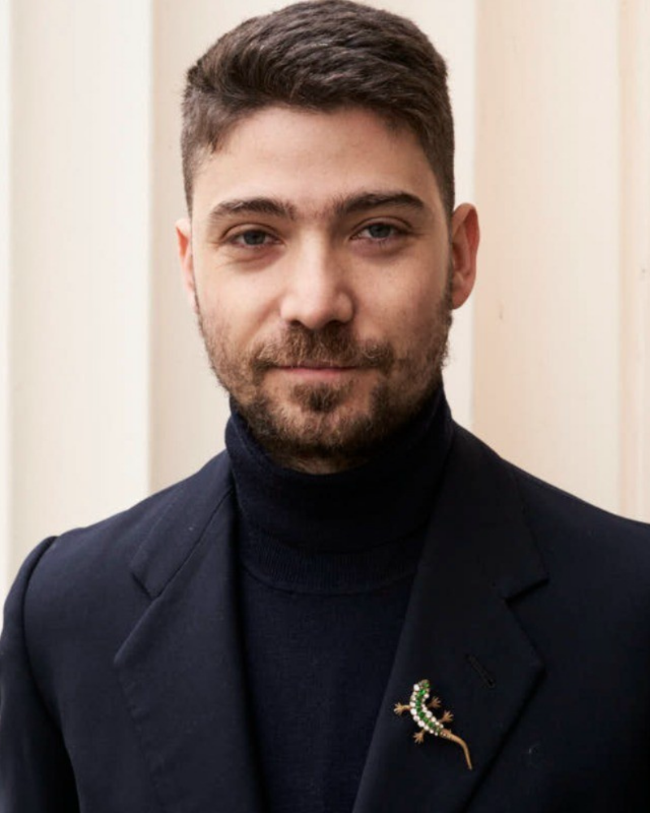

Espacio
La arquitectura, los materiales y la atmósfera definen la dirección visual.
ESTUDIO DE DISEÑO Y PRODUCCIÓN DE UNIFORMES A MEDIDA
Diseñamos y producimos uniformes a medida para equipos de hostelería, entornos médicos y servicios. Cada proyecto se desarrolla a partir de cómo trabaja el equipo, cómo se percibe el espacio y cómo debe rendir la ropa con el paso del tiempo.

SERVICIOS
El estudio está centrado en el diseño y la producción de uniformes totalmente a medida para hostelería, entorno médico y equipos de servicio.
Pensado para equipos donde la ropa forma parte de la experiencia
PARA QUIÉN ES
Elige un sector para ver prendas habituales, casos de uso y por qué la ropa importa en la experiencia diaria.
CÓMO DISEÑAMOS
Empezamos por el espacio y, a partir de ahí, construimos la ropa alrededor de las personas que la llevan.
La arquitectura, los materiales y la atmósfera definen la dirección visual.
Cada función se estudia a partir del movimiento, el ritmo de servicio y las tareas diarias.
Los ajustes, las siluetas y las categorías de prenda se alinean en todo el equipo.
La durabilidad, el cuidado y la lógica de reposición se incorporan desde el inicio.
QUÉ PODEMOS DESARROLLAR
Lo bastante amplio para equipos con varios roles. Lo bastante enfocado para mantenerse coherente, práctico y listo para producir.
CATEGORÍAS DE PRENDA
BRANDING E IDENTIDAD
CONSTRUCCIÓN TÉCNICA

PROCESO
Abre cada fase para ver el objetivo, las acciones clave, los entregables y por qué importa.
FASE 01
Definimos bien el proyecto antes de empezar el desarrollo.
FASE 02
Probamos el producto, afinamos los detalles y lo preparamos para producción.
FASE 03
Cuando todo está aprobado, el proyecto pasa a fabricación y entrega.
PERSONALIZACION AJUSTADA AL PROYECTO
Las secciones inferiores explican cómo se gestiona la personalización en términos reales de proyecto, desde el tejido hasta los detalles de branding.
La selección del tejido se basa en la duración del turno, el clima, el movimiento y las necesidades de cuidado.
La dirección de color parte del espacio y de la marca, y después se contrasta con el uso real.
Las fornituras aportan identidad y acabado sin comprometer el rendimiento diario.
El branding se define según el tipo de prenda, la frecuencia de uso y el nivel de visibilidad necesario.
El muestreo y las pruebas locales ayudan a tomar decisiones técnicas con más rapidez y claridad.

Las prendas se desarrollan alrededor del movimiento, los turnos largos y el ritmo diario del servicio.
Patrones, fornituras y referencias se archivan para que las reposiciones mantengan la consistencia a medida que el equipo evoluciona.
PARÁMETROS DE PRODUCCIÓN
Abre cada sección para ver más detalle sobre cantidades, lógica de precio y variables de plazo.
Se puede producir por debajo, pero el precio por unidad puede subir.
Aquí encontrarás rangos de precio orientativos por pieza, sin IVA.
Principales elementos que pueden elevar el precio por unidad.
Principales elementos que pueden alargar los tiempos.
MODELO DE CONTINUIDAD
La primera ejecución define el vestuario. Una vez aprobado, ese mismo trabajo puede reutilizarse para futuros pedidos más rápidos y consistentes.
PROYECTOS SELECCIONADOS
Ejemplos de cómo las decisiones de diseño se traducen en uso diario, comodidad de equipo y continuidad a largo plazo.

Prendas de cara al cliente desarrolladas alrededor de la arquitectura, la presentación y los turnos largos.
Siluetas aprobadas que se archivan una vez y se reactivan a medida que el equipo crece.

Siluetas limpias y construcción centrada en la comodidad para transmitir confianza, claridad y uso diario.
EQUIPO
Los proyectos se mantienen cerca de quienes toman las decisiones de diseño, producto y coordinación.

Fundador y Responsable de Producto
Perfil especializado en diseño y desarrollo de prenda. Lidera las siluetas, la lógica de ajuste y las decisiones de producto listas para producción.
Cofundadora y Responsable de Proyecto
Lidera la coordinación del proyecto, los plazos, la alineación con las partes implicadas y la estructura de entrega desde la primera llamada hasta el cierre.

Cofundador y Responsable de Operaciones
Aporta experiencia en operaciones de hostelería para asegurar que las decisiones sobre uniforme sean prácticas en movimiento, ritmo de servicio y uso diario.
FAQ
Respuestas ampliadas a preguntas habituales de equipos de hostelería, médico y servicios.
No. Desarrollamos cada proyecto a partir de vuestro contexto operativo, vuestra dirección de marca y la estructura del equipo. Se pueden utilizar bases existentes cuando realmente mejoran plazo y coste, pero el resultado final sigue siendo específico para vuestro proyecto.
Sí. Los patrones, tejidos, fornituras y métodos de branding aprobados se archivan para dar continuidad. Esto reduce trabajo de rediseño, mejora la consistencia para nuevas incorporaciones y facilita los pedidos futuros.
No. Algunos clientes empiezan con una sola categoría de prenda o con un solo rol y luego amplían el programa. Definimos el punto de entrada adecuado según urgencia, presupuesto e impacto operativo.
Sí. Podemos trabajar con cartas de color de proveedor para ganar rapidez o desarrollar colores y fornituras a medida cuando las cantidades lo justifican. Los métodos de branding se eligen según durabilidad, legibilidad y tipo de prenda.
INICIA LA CONVERSACIÓN
Revisamos la viabilidad, aclaramos el mejor punto de partida y te guiamos hacia el alcance adecuado para un proyecto de uniformes.
Selecciona tu idioma para futuras visitas.
Vestuario profesional diseñado alrededor de vuestro espacio, equipo y
operativa.
Los proyectos totalmente personalizados comienzan desde cero. En lugar de
adaptar un producto de catálogo, desarrollamos prendas específicamente para
vuestro entorno, la estructura de vuestro equipo y la realidad diaria del servicio.
Los uniformes se plantean como un sistema de vestuario coherente, no como
piezas aisladas. Cada prenda funciona visual y funcionalmente con el resto del
equipo.
Qué define un proyecto totalmente personalizado
Diseño que parte del espacio
La arquitectura, los materiales del interior, la iluminación y la atmósfera de la
marca definen la dirección visual del vestuario.
Desarrollo de prendas por función
Cada función se analiza individualmente: recepción, servicio, dirección,
operaciones. Las prendas se adaptan al movimiento y al ritmo de cada rol.
Siluetas a medida
Los cortes, largos y proporciones se ajustan para que las prendas encajen de
forma natural en el entorno, manteniendo la comodidad durante turnos largos.
Qué se desarrolla
Lo que los clientes deben saber
Cada proyecto define su propio alcance. Algunos clientes desarrollan una sola
prenda clave, mientras que otros construyen un sistema completo de vestuario
para todo el equipo.
Una vez aprobado, los patrones y acabados se archivan para que futuras
reposiciones puedan producirse de forma rápida y consistente.
Sistemas de uniformes diseñados para equipos de hostelería complejos.
Los hoteles suelen incluir múltiples departamentos que interactúan con los
huéspedes en distintos espacios. Los uniformes deben reflejar la identidad del
establecimiento sin perder funcionalidad para la operativa diaria.
Roles habituales
Ejemplos de prendas
Prioridades de diseño
Uniformes diseñados para entornos de servicio dinámicos.
Los equipos de restaurante necesitan prendas que equilibren durabilidad,
comodidad e identidad visual.
Los uniformes deben permitir un servicio ágil mientras refuerzan la atmósfera
del restaurante.
Prendas habituales
Aspectos clave de diseño
Prendas diseñadas para entornos tranquilos y confortables.
Los equipos de spa y bienestar necesitan uniformes que transmitan serenidad y
confianza.
El diseño prioriza suavidad, siluetas limpias y tejidos transpirables manteniendo
coherencia con la identidad de marca.
Prendas habituales
Prioridades de tejido
Uniformes profesionales para entornos sanitarios.
Los profesionales de la salud necesitan prendas que acompañen largas
jornadas de movimiento manteniendo una apariencia limpia y profesional.
Nuestro enfoque combina funcionalidad con una estética cuidada.
Prendas habituales
Prioridades de diseño
Prendas resistentes para funciones operativas.
Los equipos de servicio trabajan en mantenimiento, logística y soporte
operativo. Los uniformes deben soportar movimiento constante manteniendo
coherencia visual con la marca.
Prendas habituales
Prioridades técnicas
Prendas para funciones de atención al cliente.
Los equipos de atención al cliente representan visualmente la marca. Los
uniformes deben transmitir profesionalidad y elegancia manteniendo
comodidad durante largas jornadas de interacción.
Prendas habituales
Prioridades de diseño
Comprender el entorno y las necesidades operativas.
Cada proyecto comienza con una fase de descubrimiento en la que analizamos el contexto en el que funcionarán las prendas.
La arquitectura, el flujo de servicio, los roles del equipo y la identidad de marca definen la dirección del vestuario.
Actividades
El objetivo es establecer una base clara antes de comenzar el desarrollo.
Transformar la dirección creativa en prendas reales.
Durante el desarrollo refinamos tejidos, patrones y construcción de las prendas.
Se producen prototipos y se prueban mediante pruebas de ajuste para asegurar comodidad, funcionalidad y coherencia visual.
Actividades
Esta fase garantiza que las prendas funcionen correctamente en condiciones reales de trabajo.
Fabricación de los diseños aprobados.
Una vez aprobadas las prendas, la producción comienza con patrones, tejidos y acabados finalizados.
La fabricación local permite un control de calidad cercano y plazos fiables.
Actividades
Las cantidades mínimas dependen de la construcción de la prenda y de los materiales.
Mínimos habituales
Prendas de tejido plano
50 piezas por modelo
Repartidas entre tallas y colores.
Prenda de punto
100 a 150 piezas por modelo.
Pueden ser posibles tiradas más pequeñas, pero pueden afectar al precio por eficiencia de producción.
El precio varía según el alcance técnico y creativo del proyecto.
Cada proyecto se evalúa de forma individual en función de las prendas desarrolladas y de los parámetros de producción.
La personalización y el tejido elegido pueden afectar mucho al precio. Los rangos de abajo deben entenderse solo como orientativos.
El precio depende de
Los rangos de precio pueden variar de forma significativa según estas variables.
Todos los precios son orientativos por pieza (sin IVA).
| Tipo de producto | Rango de precio (€/unidad) | Notas |
|---|---|---|
| Camisetas | 25€ – 40€ | Algodón o mezcla de algodón, branding básico |
| Polos | 30€ – 50€ | Bordado o etiqueta tejida |
| Camisas (hostelería) | 65€ – 85€ | Pieza central del sistema de uniformes |
| Sobrecamisas | 60€ – 95€ | Muy utilizadas en equipos de servicio |
| Pantalones | 65€ – 95€ | Costuras reforzadas y tejidos resistentes |
| Faldas | 55€ – 85€ | Siluetas pensadas para equipos de hospitalidad |
| Vestidos | 75€ – 120€ | Confección más compleja |
| Delantales | 30€ – 60€ | Según tejido y funcionalidad |
| Punto (jerséis / cárdigans) | 70€ – 110€ | Cantidades mínimas más altas |
| Blazers / chaquetas sastre | 95€ – 150€+ | Prendas estructuradas |
| Chaquetas ligeras / capas exteriores | 80€ – 140€ | Según tejido y acabados |
| Gorras | 15€ – 30€ | Bordado o etiqueta |
| Bolsas tote | 12€ – 25€ | Algodón o lona |
| Sudaderas / hoodies | 45€ – 80€ | Impresión o bordado |
La mayoría de los proyectos combinan varias prendas para crear un vestuario coherente.
El precio final depende de la selección de tejidos, la complejidad de confección, las técnicas de branding y las cantidades producidas.
Varios elementos influyen en el coste final de un proyecto de uniformes.
Factores principales
Calidad de tejidos
Complejidad de confección
Técnicas de branding
Cantidades pedidas
Los tiempos del proyecto dependen de la complejidad del desarrollo y de la planificación de producción.
Plazos habituales
Desarrollo: 4–6 semanas
Producción: 3–5 semanas
Factores que pueden ampliar los tiempos
Un briefing claro y decisiones ágiles reducen los plazos de forma significativa.